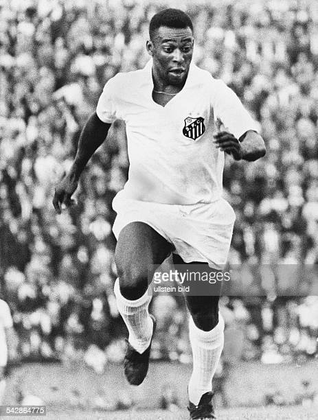

Edson Arantes do Nascimento(Pelé)
national treasure and a worldwide phenomenon

Pele's life history and achievement:
- 1940 - Pelé was born Edson Arantes do Nascimento
- 1956 - de Brito took Pelé to Santos, an industrial and port city located near São Paulo, to try out for professional club Santos FC, telling the directors at Santos that the 15-yea r-old would be "the greatest football player in t